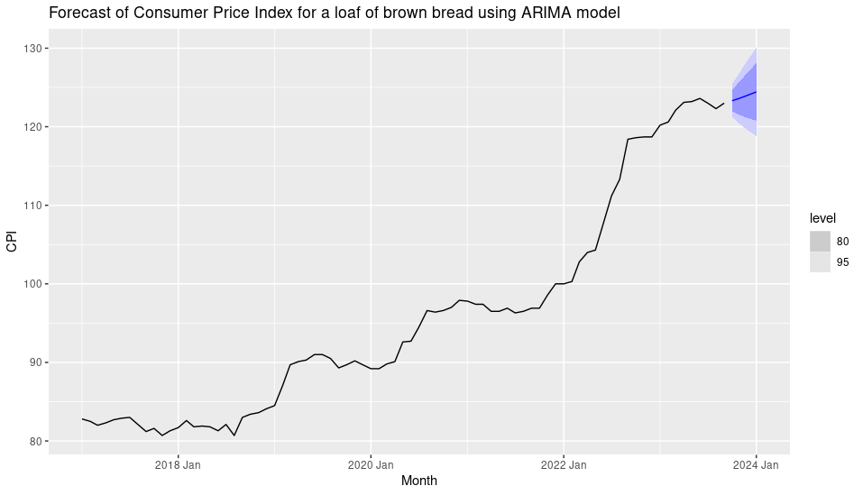
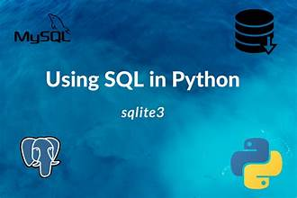

In this project we clean data and build models to make it more usable for analysis. Explore and manipulate large data sets in statistical software packages in order to extract
information of interest. Create new data sets and recoded or newly computed variables by querying, joining and filtering
existing data tables.


Introduce the metrics for measuring the performance of regression models: Mean squared error. List the assumptions of the linear regression.

Different ways of plotting time series and identifying patterns
from plots. Evaluating forecast accuracy, Fitted values and residuals. Basic forecasting techniques.

Implement the simple linear regression model in R. Interpret the results of the regression plots. Interpret the results of Ordinary least squares.

Calculate the multiple linear regression model given the data. Read the data and check variable names. Using SQL to see which observations have missing values. Using SQL to remove duplicate observations. Using SQL to count a certain condition. Using SQL to find the average of a variable. Using SQL to find the sum of a variable. correlation values, graphs. Split the data into a training and a test set. Prediction Model.

Introduce the metrics for measuring the performance of logistic regression model. Calculate the means squared error. List the assumptions of the logistic regression. Derive the logistic function using odds ratio and logit function. Use the logistic regression model to make prediction on binary dataset and Interpret the results of the regression plots. Plot the ROC curve.

Implement the decision tree in R. Visualise the decision tree in R for both classification and regression regression and interpret
the results. To calculate the means squared error for the regression task.Implement k-mean clustering in python. Get the optimal number of clusters (K) by plotting the elbow curve and the silhouette score curve
in python. Plot our cluster in a regression and pairwise plot and interpret the results.
Different ways of plotting time series and identifying patterns
from plots. Predict the next value of your time series. Decomposing time series into trend-cycle, seasonal, and
remainder components. Use the ETS() function to estimate the equivalent model for simple exponential smoothing. Use ARIMA() to find an appropriate ARIMA model of your time series.

This research project was done at work place for a period of 4 months at Fundani Institutional Planning CPUT. This study uses a dataset that consists of academic records and application data for all CPUT students studying undergraduate qualification from 2018 to 2022. This study also uses residence, curriculum and enrollment dataset. Academic records data have 1746490 observations and 26 variables, residence data have 48728 observations and 11 variables, and Application data 1348770 observations of 40 variables.
Python Programming, Database Programming using SQL in Python. Using the employees table to answer SQL questions

Part1: Python Programming, Part 2 : Database Programming using SQL, Part3 : Connecting to Databases using Python and SQLite3.